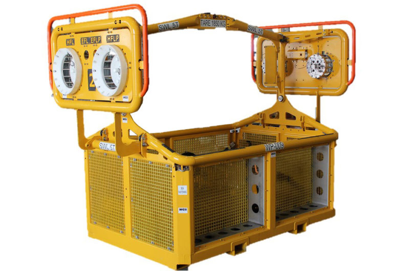
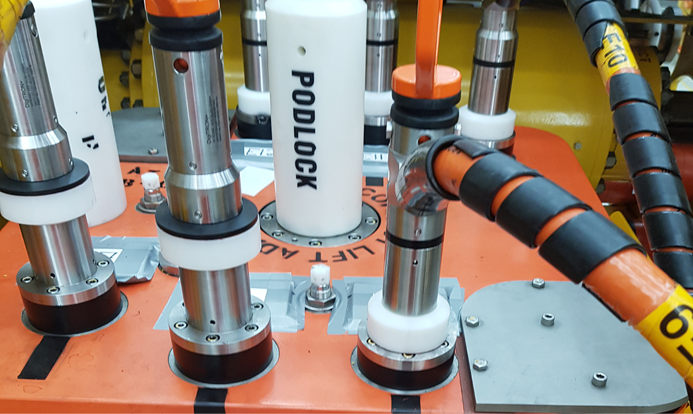
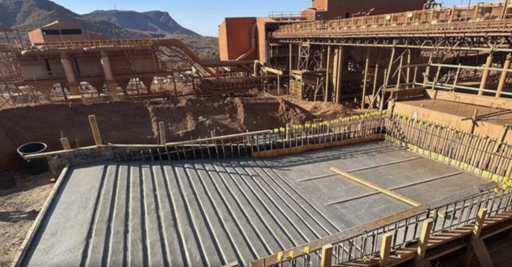

I'm a mechanical engineer. Design is where my time goes — but shipping real engineered equipment means wrangling procurement, compliance and documentation too. So I built the system that takes the pain out of that chain — and I'd rather build it full-time than keep it a side project.
When a workshop builds a pressure vessel, a lifting frame, a skid — the customer doesn't just buy the steel. They buy a Manufacturer's Record Book: a bound, indexed dossier proving every weld was qualified, every material certified, every pressure and load test passed. Hundreds of certificates, gathered across months, from dozens of suppliers.
Getting there means running procurement in parallel — requests for quote, supplier quotes, purchase orders, and the document receipts that come back with each delivery — and then reconciling all of it against the bill of materials before a single PDF can be compiled. In most shops that entire chain lives in spreadsheets, email threads, and a folder of loose PDFs.
It is slow, it is error-prone, and it is invisible until the deadline. I watched it firsthand. So I modelled the whole chain as software.
One bill of materials. Hundreds of certificates. Zero tolerance for a missing page at handover.
Ingest the bill of materials straight from the CAD model. A three-way diff keeps parts re-syncable as the design evolves — added, changed, removed — so procurement always tracks the latest revision without losing operator work.
A parts workbench — flat, assembly-tree, and grouped views — with multi-select straight into an RFQ. Group, spare and ad-hoc lines survive every re-sync.
Build RFQs across supplier slots, receive quotes into a three-bucket inbox, compare on a server-authoritative cost engine, and seal purchase orders.
Match received documents against requirements (matched / missing / unexpected), then one-click compile to a bookmarked Word/PDF binder with live progress.
The compile is the keystone: it renders a document, converts and stitches every supplier certificate into one PDF, adds a table of contents and bookmarks, and streams progress to the browser over server-sent events — survivable across a refresh.
Static SPA behind Caddy; a .NET 10 API enforcing JWT auth and row-level security on every table; a background worker driving the render→convert→stitch→bookmark compile pipeline against a Gotenberg sidecar; PostgreSQL and a self-hosted Supabase for auth and storage. The .NET DTOs are the single source of truth — a build-time OpenAPI document regenerates a typed TypeScript client, and CI fails on drift.
The bill of materials syncs in from CAD and stays re-syncable through a three-bucket diff as the design changes. Suppliers, RFQs, quotes and POs are app-native — the whole procurement chain lives in the platform, not in spreadsheets.
No live Outlook or accounting-SDK coupling. RFQs and POs export via mailto, copy and file — so no third-party admin-consent gate can ever block a quote going out. Deliberate, reversible, auditable.
Readiness reconciles declared documents against what's actually on disk and surfaces the gaps — matched, missing, unexpected — without ever stopping the user. The human decides; the system never silently drops a page.
Each of these is written up as an architecture decision record in the repository — context, decision, consequences.

Subsea · DNVDesigned and certified a welded structural frame for deploying offshore intervention tooling — a full DNV-ST-E273 (2.7-3) package: structural FEA, fatigue and lifting assessment, weld design, and third-party approval.

HydraulicsA complete mechanical and hydraulic system for subsea wellhead-cap ejection — 150 t capacity, FEA-validated, with DNV lifting studies and the bolted-joint and seal-gland procedures I authored as the company standard. It performed flawlessly in the field.

Industrial · $100M+As lead designer for Tier-1 mining operators, I delivered large-scale dust-extraction plants — the largest a 7-storey steel structure with 60+ t of ductwork routed from laser-scanned point clouds through a live mine site. I led a team of three from concept to fabrication drawings.
The thread that ties this to the software: at every stop I automated the grind — a parametric dust-collector that took design from weeks to hours, an Excel/VBA procurement-and-MRB system that saved ~$200k a year. The MRB Platform is that same instinct, rebuilt properly.
I'm a mechanical engineer who got tired of watching good engineering work get bottlenecked by bad software — or no software at all.
So I taught myself to build it: full-stack, end to end, from the domain model and the architecture decisions through to the CI pipeline and the Docker stack. The MRB Platform is the result — a production-shaped system I designed and built solo, the same kind of integrated internal tool a project-based engineering business actually needs. Eight years designing real equipment — subsea tooling, industrial plant, mining structures — is exactly where I learned where that software needs to sit.
I understand the problem from the inside, and I can build the system that solves it. What I want next is to do exactly that, full-time, and own it as it grows.